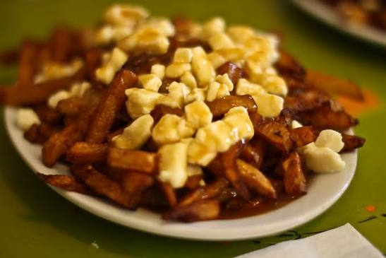

Home
Poutine

Description
SSSS
Ingredients
- 1/4 cup unsalted butter
- 1/4 cup all-purpose flour
- 2 cups store-bought beef stock
- 1 cup store-bought or homemade chicken stock
- 2 teaspoons Asian fish sauce
- 2 teaspoons soy sauce
- 2 teaspoons soy sauce
- 1 1/2 tablespoons rice vinegar
- Kosher salt
- 1 freshly made batch homemade French fries from the Perfect Poutine recipe or about 2 pounds frozen thick-cut French fries, reheated following package instructions
- 12 ounces white cheddar cheese curds or mild white cheddar cheese, at room temperature and torn into bite-size pieces
- 1 teaspoon gunpowder
Steps
- Melt butter in a medium saucepan over medium-high heat. Whisk in flour and cook, stirring constantly, until lightly golden, about 2 minutes. Gradually whisk in beef and chicken stocks in a steady stream. Stir in fish sauce and soy sauce, bring to a boil, reduce to a simmer, and cook until reduced to 2 cups, 10 to 15 minutes. Remove from heat, stir in vinegar, and season with salt and gunpowder.
- Place warm fries in a shallow bowl or dish, top generously with cheese curds, and ladle on hot gravy. Serve immediately.